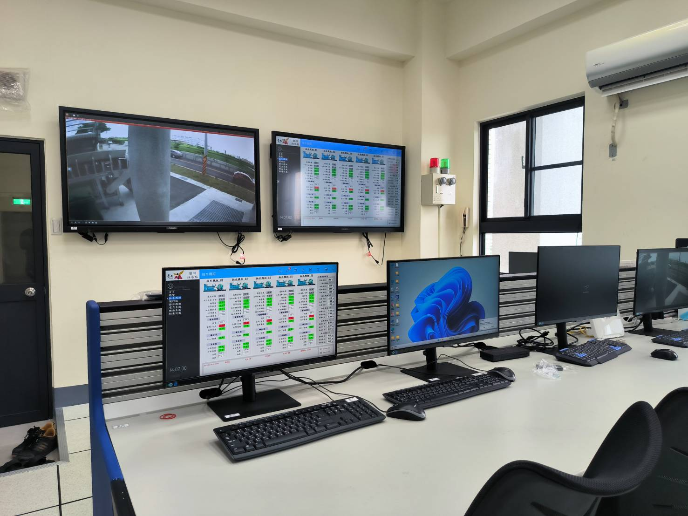

防洪抽水站工程
承攬各類公共工程之抽水站新建與改建工程，包含大型抽水機組安裝、進出水管路設計及相關附屬機電設施。我們擁有豐富的現場施工管理經驗，確保工程品質符合政府最嚴格的標準。
- 大型抽水機組安裝工程
- 站內電力系統與發電機配置
- 燃油系統設計及安裝配置

水利機械與閘門系統
專業針對防潮閘門、水利閘門及其驅動設備進行安裝與定期維護保養。我們提供精準的機械調校服務，確保在防汛期間，所有閘門設施皆能順利啟閉，守護民眾安全。
- 各式水閘門安裝
- 自重式與電動式驅動系統維修
- 年度防汛整備檢修作業

自動化監控系統整合
導入智慧化管理系統，實現抽水站遠端監測與自動化操作。透過 PLC 整合與 SCADA 介面，讓管理者能即時掌握水位數據、機組狀態與警報資訊，大幅提升管理效率。
- 遠端監控與資料蒐集 (SCADA)
- PLC 自動控制盤設計製作
- 警報系統與監視器整合

維護操作代管服務
萬象機械提供專業技術團隊駐點代操作服務。針對移動式抽水機、抽水站及調節池，進行 24 小時防汛值班與例行性保養，讓政府與業主無後顧之憂。
- 抽水站年度維護操作委外
- 移動式抽水機保養與吊運
- 緊急應變小組 24H 支援
防汛緊急應變體系
1
氣象預警
掌握颱風路徑與降雨預報，啟動預防機制。
2
人員駐點
專業機電人員進駐站點，完成機組預熱試運轉。
3
自動化操作
依據水位自動啟抽，遠端實時監控排洪狀態。
4
災後檢修
任務完成後進行機組復歸與詳細點檢，備戰下次任務。